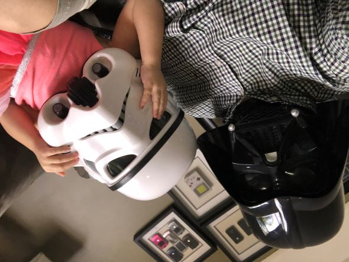

About

A one man operation, Mike Cody has been 3D printing parts, props, and armor for over 6 years (that's 12 in printer years!). Mike is based out of Miami, FL and currently works in the IT department at the University of Miami. His interest in 3D printing and prop making was piqued when a friend of his lent him a 3D printer to try out for a few weeks, and 7 printers later, we are here. Mike is also a part of the 501st Legion, a "professional" Star Wars costuming group that raises money for charity through character appearances at various events; a membership that stemmed from his love for making Star Wars themed props and helmets.